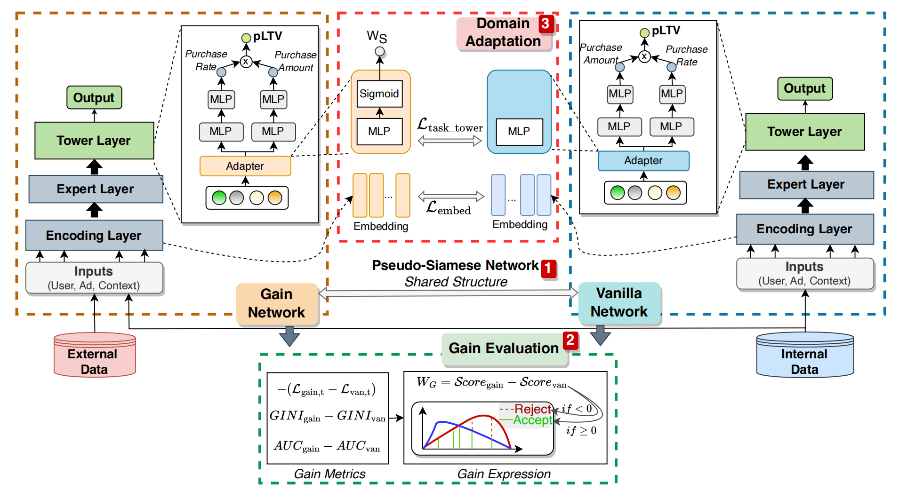

论文精读9：ADSNet
探索ADSNet：广告领域跨域LTV预测的创新突破
1 引言
在当今数字化广告的时代，客户终身价值（LTV，Lifetime Value）预测已成为广告行业的关键环节。LTV代表着一个客户在与广告商互动的整个周期内所贡献的累计价值，这一指标直接关联着广告商的投资回报率（ROI）。精准的LTV预测对于广告系统的优化意义重大，它能够帮助广告商合理分配广告预算，精准定位高价值客户，从而制定更具针对性的营销策略，提升广告投放的效果和效率。
然而，在实际操作中，LTV预测面临着诸多挑战，其中数据稀疏性问题尤为突出。从广告转化漏斗（如图1）来看，在从曝光到购买的过程中，数据量呈现出指数级的下降。曝光量可能达到级别，点击量为，激活量为，但购买量仅为（内部数据）和（外部数据）。如此少量的购买样本，使得传统的深度学习模型难以充分挖掘数据中的潜在模式和特征，进而严重制约了LTV预测的准确性。
为了解决这些问题，研究人员不断探索新的方法和技术。其中，跨域迁移学习成为了备受关注的方向，它旨在利用外部数据（源域）的知识来辅助广告平台内部数据（目标域）的学习，以缓解数据稀疏的影响。但在跨域迁移学习中，数据分布差异导致的负迁移问题又成为了新的阻碍。在此背景下，论文“ADSNet: Cross - Domain LTV Prediction with an Adaptive Siamese Network in Advertising”提出的自适应差异孪生网络（ADSNet），为解决广告系统中LTV预测的难题提供了创新的解决方案。
图1：广告系统转化漏斗及挑战，展示了内部购买数据的稀疏性、引入外部数据的情况以及数据分布差异导致的负迁移问题
2 相关工作
2.1 LTV 预测方法
在LTV预测领域，研究人员进行了大量的探索。早期的方法主要基于传统的统计模型，如回归分析、生存分析等。这些方法虽然理论基础扎实，但在处理复杂的用户行为和大规模数据时，表现出了明显的局限性。随着深度学习的发展，基于神经网络的方法逐渐占据主导地位。例如，深度神经网络（DNN）通过构建多层隐藏层，可以自动学习数据中的复杂特征，从而提高LTV预测的准确性。还有一些研究尝试利用循环神经网络（RNN）及其变体，如长短期记忆网络（LSTM）和门控循环单元（GRU），来捕捉用户行为的时间序列特征，因为用户的购买行为往往具有一定的时间依赖性。
然而，这些方法在面对数据稀疏问题时，仍然存在不足。由于购买样本的稀缺，模型难以学习到足够的有效信息，导致预测精度受限。例如，在实际的广告场景中，很多用户可能只是偶尔购买一次，这种低频购买行为使得模型难以从有限的样本中学习到准确的模式。
2.2 跨域迁移学习方法
跨域迁移学习旨在将一个领域（源域）的知识迁移到另一个领域（目标域），以解决目标域数据不足的问题。在广告领域，跨域迁移学习主要用于利用外部数据来提升LTV预测的性能。常见的跨域迁移学习方法包括基于特征对齐的方法、基于对抗学习的方法和基于多任务学习的方法。
基于特征对齐的方法，如深度适配网络（DAN），通过最小化源域和目标域特征分布之间的差异，来实现知识的迁移。具体来说，DAN使用多核最大均值差异（MK - MMD）来度量两个域的特征分布差异，并在训练过程中不断调整模型参数，使得源域和目标域的特征分布尽可能接近。这种方法的优点是简单直观，能够在一定程度上减少域间差异。但它的局限性在于，仅仅对齐特征分布可能无法充分利用源域的有效知识，而且对于复杂的域差异情况，效果可能不尽如人意。
基于对抗学习的方法，如域对抗神经网络（DANN），通过引入对抗训练机制来学习域不变特征。在DANN中，有一个判别器用于区分样本来自源域还是目标域，同时生成器（通常是模型的特征提取部分）试图生成让判别器无法区分域别的特征表示。通过这种对抗过程，模型可以学习到对域不敏感的特征，从而实现跨域迁移。然而，对抗学习的训练过程通常比较复杂，需要仔细调整超参数，而且容易出现梯度消失或梯度爆炸的问题，导致模型不稳定。
基于多任务学习的方法，如多门混合专家模型（MMOE），通过在多个相关任务上进行联合训练，共享部分模型参数，从而提高模型的泛化能力和跨域迁移能力。在LTV预测中，可以将不同域的LTV预测任务看作是多个相关任务，通过MMOE模型进行联合学习。这种方法的优点是能够充分利用多个任务之间的相关性，提高模型的学习效率。但它也存在一些问题，比如不同任务之间的平衡难以把握，如果任务之间的差异较大，可能会导致模型在某些任务上的性能下降。
| 方法类型 | 优点 | 缺点 |
|---|---|---|
| 基于特征对齐的方法 | 简单直观，能减少域间差异 | 难以充分利用源域知识，对复杂域差异效果不佳 |
| 基于对抗学习的方法 | 可学习域不变特征 | 训练复杂，易出现梯度问题，模型不稳定 |
| 基于多任务学习的方法 | 利用任务相关性，提高学习效率 | 任务平衡难把握，任务差异大时性能易下降 |
与上述方法相比，ADSNet针对广告领域LTV预测的特点，提出了独特的解决方案。它不仅考虑了数据稀疏性和跨域迁移问题，还通过创新的架构设计和训练策略，有效地解决了负迁移问题，为LTV预测提供了更高效、更准确的方法。
3 技术细节
3.1 LTV预测骨干网络
ADSNet的骨干网络由编码层、专家层和塔层构成，旨在更好地适应LTV在实际广告场景中的复杂分布。
- 编码层：编码层负责对输入特征进行处理和编码。在广告场景中，输入特征包括用户特征（如年龄、性别、地理位置、浏览历史等）和广告特征（如广告类型、广告内容、投放时间等）。编码层首先将这些特征进行分类，然后将不同类型的特征编码为嵌入向量。例如，将用户的年龄特征映射到一个低维向量空间，使得年龄相近的用户在向量空间中的距离也较近。为了进一步捕捉特征之间的交互关系，编码层采用了Field - weighted Factorization Machines（FwFM）。FwFM可以根据不同特征域的重要性，对特征之间的交互进行加权，从而更准确地建模特征之间的复杂关系。
- 专家层：专家层借鉴了Mixture of Experts（MoE）架构的思想，采用了Progressive Layered Extraction（PLE）。PLE由一组专家网络和一个门控网络组成。每个专家网络都是一个多层感知机（MLP），负责学习输入数据的特定方面或模式。例如，有的专家网络可能擅长学习用户的长期购买偏好，而有的则对广告的短期流行趋势更敏感。门控网络根据输入数据的特点，为每个专家网络分配不同的权重，从而决定每个专家网络对最终输出的贡献。通过这种方式，专家层能够更全面、更深入地学习输入数据的特征。
- 塔层：考虑到LTV的长-tailed和多模态分布特点，塔层扩展了一个多粒度预测模块。该模块分为两个部分：购买概率预测和购买金额预测。在购买概率预测中，使用一个基于MLP的分类器来估计每个样本的购买可能性，采用交叉熵损失函数来优化模型。对于购买金额预测，ADSNet没有采用传统的基于ZILN（Zero - Inflated LogNormal）的方法，而是设计了一个多类分类模块结合有序分类。具体来说，将LTV分布划分为多个子分布，通过多个二元分类器对每个子分布进行预测。这种方法能够更好地捕捉购买金额的有序性质，更符合实际购买行为的特点。
3.2 差异伪孪生网络
差异伪孪生网络是ADSNet的核心创新之一，它由香草网络和增益网络组成（如图2）。香草网络仅使用内部数据进行训练，专注于学习目标域（内部数据）的特征和模式。增益网络则同时接收内部和外部数据，旨在通过融合外部数据的信息来增强模型的泛化能力。
在训练过程中，两个网络的参数同时更新。增益网络通过与香草网络的对比，学习到外部数据中对目标域有益的信息，并将这些信息传递给香草网络。例如，如果增益网络发现某些外部数据中的用户行为模式与内部数据中的高价值用户行为模式相似，它就可以将这些模式的特征信息传递给香草网络，帮助香草网络更好地识别潜在的高价值用户。这种结构使得模型能够有效地利用外部数据，同时避免了直接将外部数据引入可能带来的负迁移问题。
图2：传统多域模型与ADSNet的对比，展示了ADSNet如何通过伪孪生网络评估信息增益，拒绝负增益样本
3.3 增益评估策略
为了进一步优化对外部数据的利用，ADSNet提出了增益评估策略。该策略基于伪孪生网络结构，通过对比香草网络和增益网络的输出，计算输入数据对模型性能的贡献，即信息增益。
具体来说，定义增益为，其中是增益度量函数。在实际计算中，通过比较两个网络在内部样本上计算的损失差异来量化外部数据对增益网络的增益。公式表示为，其中是香草网络在内部数据上的损失，是增益网络在内部数据上的损失。如果，则说明外部数据对内部域有正增益，即外部数据对模型性能有提升作用；反之，如果，则可能存在负迁移，模型会拒绝这些外部数据。这种策略使得模型能够自动筛选出对目标域有益的外部数据，避免引入噪声数据，从而提高模型的性能。
3.4 域适应模块
域适应模块是ADSNet中连接增益网络和香草网络的关键桥梁，用于减少不同域之间的数据分布差异。该模块在塔模块的底部集成了一个适配器层，适配器层由一个MLP实现。
适配器层首先估计外部数据的重要性，计算公式为，其中是编码层输出的嵌入向量。通过这个公式，适配器层可以根据外部数据的特征，动态地调整其对模型的重要性权重。
为了进一步约束增益网络和香草网络之间的分布一致性，域适应模块考虑了低层次的嵌入层和高层次的塔层两个层次的分布差异。采用知识蒸馏的方法，通过均方误差（MSE）来约束两个网络的分布。具体来说，计算嵌入层的损失，其中和分别是香草网络和增益网络的嵌入向量；计算塔层适配器输出的损失，其中和分别是香草网络和增益网络塔层适配器的输出。域适应模块的总损失为。通过这种方式，域适应模块能够有效地减少域间差异，增强模型在不同域之间的适应性。
3.5 训练目标与策略
ADSNet的训练目标是通过联合优化多个损失函数，实现对模型的有效训练。总损失函数定义为：，其中是增益网络的损失，是香草网络的损失，是控制域适应损失权重的超参数。增益网络的损失计算为，其中是增益网络在外部数据上的损失，是增益网络在内部数据上的损失，是外部数据的权重，是指示函数，只有当时，才会考虑外部数据的损失对增益网络的影响。
在训练策略上，ADSNet采用了迭代对齐策略（如图3）。训练过程分为两个阶段：热身阶段和联合训练阶段。在热身阶段，仅使用内部样本训练香草网络，使香草网络能够建立一个稳定的基础模型。在联合训练阶段，首先将增益网络的参数初始化为香草网络的参数，然后同时使用内部和外部样本训练两个网络。在训练过程中，每隔一定的步数（例如500步），将香草网络的参数同步为增益网络的参数，以防止两个网络的参数差异过大，确保模型能够有效地融合内外部数据的信息。

图3：迭代对齐策略的训练流程，确保两个网络在训练过程中保持参数同步，有效融合内外部数据信息
4 实验与结果
4.1 实验设计
为了验证ADSNet的有效性，作者进行了全面的实验。实验主要包括与多种基线模型的对比，以及对ADSNet各个组件的消融实验。对比模型包括单域模型（如DeepFM、ZILN等）和跨域模型（如Share - Bottom、MMOE等）。通过与这些模型的对比，可以清晰地评估ADSNet在LTV预测任务上的性能提升。
消融实验则是分别去掉ADSNet中的增益评估策略、域适应模块和迭代对齐策略，观察模型性能的变化。通过这种方式，可以深入了解每个组件对模型整体性能的贡献。
4.2 数据集
由于缺乏公开的LTV预测数据集，作者构建了一个行业数据集。该数据集收集了腾讯在线广告系统90天的转换日志，涵盖了四个内部业务域和来自其他平台的授权外部数据。数据集包含数十亿个样本，并按照时间轴进行划分，其中70天的样本用于训练，10天的样本用于验证，10天的样本用于测试。数据集的统计信息如下表所示：
| 域 | 样本数量 | 平均LTV |
|---|---|---|
| 内部数据 - Domain1 | 9,136 | 0.34 |
| 内部数据 - Domain2 | 15,706 | 0.53 |
| 内部数据 - Domain3 | 34,129 | 4.82 |
| 外部数据 | 225,490 | 8.02 |
从表中可以看出，不同域的数据分布存在明显差异，外部数据的平均LTV与内部数据有较大不同，这为评估模型在跨域数据上的性能提供了良好的测试环境。
4.3 评估指标
实验采用了两个常用的评估指标来衡量模型的性能：AUC（Area Under the Curve）和归一化基尼系数（Norm GINI）。AUC用于评估模型识别购买用户的能力，它衡量了模型在区分正样本（购买用户）和负样本（非购买用户）方面的表现。AUC值越高，说明模型能够更好地区分购买和非购买用户。
归一化基尼系数则用于评估模型根据预测的LTV对用户进行准确排序的能力。与均方误差（MSE）相比，归一化基尼系数对异常值更具鲁棒性，并且在商业场景中具有更好的解释性。该系数的取值范围在0到1之间，值越接近1，表示模型根据预测LTV对用户的排序与真实LTV的排序一致性越高。
4.4 实验结果
- 对比模型性能比较：实验结果表明，ADSNet的骨干模型（ADSNet - Backbone）已经优于其他单域模型，这说明其针对LTV预测设计的网络架构具有优势。例如，在Domain1上，ADSNet - Backbone的AUC达到0.763，GINI达到0.770，而DeepFM的AUC仅为0.719，GINI为0.731。完整的ADSNet模型在跨域方法中表现最佳，在所有域的数据集上，其AUC和GINI都有显著提升。以Domain3为例，ADSNet的AUC达到0.9614，GINI达到0.9570，相比其他跨域模型有明显优势（具体数据见原论文表2）。
- 消融实验结果：消融实验的结果进一步验证了ADSNet各个组件的重要性（见原论文表3）。去掉增益评估策略后，模型的GINI从0.856下降到0.824，这表明增益评估策略在拒绝噪声样本、避免负迁移方面发挥了关键作用。去掉域适应模块后，GINI下降了2.3%，说明约束增益网络和香草网络之间的分布差异有助于提高知识迁移的效果。去掉迭代对齐策略后，GINI也有所下降。
 微信
微信 支付宝
支付宝